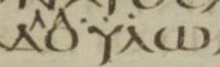

עֶבֶד ʿèbed – servant, slave
Semantic Fields:
Servitude
Author(s):
Haposan Cornelius Sinaga
First published: 2026-01-06
Citation: Haposan Cornelius Sinaga, עֶבֶד ʿèbed – servant, slave,
Semantics of Ancient Hebrew Database (sahd-online.com), 2026
(WORK IN PROGRESS)
Introduction
Grammatical type: noun masc.
Occurrences: 800 HB (180/424/196).
-
Torah: Gen 9:25 (2x), 26, 27; 12:16; 14:15; 18:3, 5; 19:2, 19; 20:8, 14; 21:25; 24:2, 5, 9, 10, 14, 17, 34, 35, 52, 53, 59, 61, 65 (2x), 66; 26:15, 19, 24, 25, 32; 27:37; 30:43; 32:5, 6, 11, 17 (2x), 19, 21; 33:5, 14; 39:17, 19; 40:20 (2x); 41:10, 12, 37, 38; 42:10, 11, 13; 43:18, 28; 44:7, 9 (2x), 10, 16 (2x), 17, 18 (2x), 19, 21, 23, 24, 27, 30, 31 (2x), 32, 33 (2x); 45:16; 46:34; 47:3, 4 (2x), 19, 25; 50:2, 7, 17, 18; Exod 4:10; 5:15, 16 (2x), 21; 7:10, 20; 7:28; 7:29; 8:5; 8:7; 8:17; 8:20; 8:25; 8:27; 9:14, 20 (2x), 21, 30, 34; 10:1, 6, 7; 11:3, 8; 12:30, 44; 13:3, 14; 14:5, 31; 20:2, 10, 17; 21:2, 5, 7, 20, 26, 27, 32; 32:13; Lev 25:6, 39, 42 (2x), 44 (2x), 55 (2x); 26:13; Num 11:11; 12:7, 8; 14:24; 22:18; 31:49; 32:4, 5, 25, 27, 31; Deut 3:24; 5:6, 14 (2x), 15, 21; 6:12, 21; 7:8; 8:14; 9:27; 12:12, 18; 13:6, 11; 15:15, 17; 16:11, 12, 14; 23:16; 24:18, 22; 28:68; 29:1; 32:36, 43; 34:5, 11;
-
Nebiim: Josh 1:1, 2, 7, 13, 15; 5:14; 8:31, 33; 9:8, 9, 11, 23, 24 (2x); 10:6; 11:12, 15; 12:6 (2x); 13:8; 14:7; 18:7; 22:2, 4, 5; 24:17, 29; Judg 2:8; 3:24; 6:8, 27; 15:18; 19:19; 1 Sam 3:9, 10; 8:14, 15, 16, 17; 12:19; 16:15, 16, 17; 17:8, 9 (2x), 32, 34, 36, 58; 18:5, 22 (2x), 23, 24, 26, 30; 19:1, 4; 20:7, 8 (2x); 21:8, 12, 15; 22:6, 7, 8, 9, 14, 15 (2x), 17; 23:10, 11 (2x); 25:8, 10 (2x), 39, 40, 41; 26:18, 19; 27:5, 12; 28:2, 7 (2x), 23, 25; 29:3, 8, 10; 30:13; 2 Sam 2:12, 13, 15, 17, 30, 31; 3:18, 22, 38; 6:20; 7:5, 8, 19, 20, 21, 25, 26, 27 (2x), 28, 29 (2x); 8:2, 6, 7, 14; 9:2 (2x), 6, 8, 10 (2x), 11 (2x), 12; 10:2 (2x), 3, 4, 19; 11:1, 9, 11, 13, 17, 21, 24 (3x); 12:18, 19 (2x), 21; 13:24 (3x), 31, 35, 36; 14:19, 20, 22 (2x), 30 (2x), 31; 15:2, 8, 14, 15 (2x), 18, 21, 34 (3x); 16:6, 11; 17:20; 18:7, 9, 29 (2x); 19:6, 7, 8, 15, 18, 20, 21, 27 (3x), 28, 29, 36 (2x), 37, 38 (2x); 20:6; 21:15, 22; 24:10, 20, 21; 1 Kgs 1:2, 9, 19, 26 (2x), 27, 33, 47, 51; 2:38, 39 (2x), 40 (2x); 3:6, 7, 8, 9, 15; 5:15; 5:20 (3x), 23; 8:23, 24, 25, 26, 28 (2x), 29, 30, 32, 36, 52, 53, 56, 59, 66; 9:22 (2x), 27 (2x); 10:5, 8, 13; 11:11, 13, 17, 26, 32, 34, 36, 38; 12:7 (2x); 14:8, 18; 15:18, 29; 16:9; 18:9, 12, 36; 20:6 (2x), 9, 12, 23, 31, 32, 39, 40; 22:3, 50 (2x); 2 Kgs 1:13; 2:16; 3:11; 4:1 (3x); 5:6, 13, 15, 17 (2x), 18 (2x), 25, 26; 6:3, 8, 11, 12; 7:12, 13; 8:13, 19; 9:7 (2x), 11, 28, 36; 10:5, 10, 23; 12:21, 22; 14:5, 25; 16:7; 17:3, 13, 23; 18:12, 24, 26; 19:5, 34; 20:6; 21:8, 10, 23; 22:9, 12; 23:30; 24:1, 2, 10, 11, 12; 25:8, 24; Isa 14:2; 20:3; 22:20; 24:2; 36:9, 11; 37:5, 24, 35; 41:8, 9; 42:1, 19 (2x); 43:10; 44:1, 2, 21 (2x), 26; 45:4; 48:20; 49:3, 5, 6, 7; 50:10; 52:13; 53:11; 54:17; 56:6; 63:17; 65:8, 9, 13 (3x), 14, 15; 66:14; Jer 2:14; 7:25; 21:7; 22:2, 4; 25:4, 9, 19; 26:5; 27:6; 29:19; 30:10; 33:21, 22, 26; 34:9, 10, 11 (2x), 13, 16 (2x); 35:15; 36:24, 31; 37:2, 18; 43:10; 44:4; 46:26, 27, 28; Ezek 28:25; 34:23, 24; 37:24, 25 (2x); 38:17; 46:17; Joel 3:2; Amos 3:7; Mic 6:4; Hag 2:23; Zech 1:6; 2:13; 3:8; Mal 1:6; 3:22;
-
Ketubim: Pss 18:1; 19:12, 14; 27:9; 31:17; 34:23; 35:27; 36:1; 69:18, 37; 78:70; 79:2, 10; 86:2, 4, 16; 89:4, 21, 40, 51; 90:13, 16; 102:15, 29; 105:6, 17, 25, 26, 42; 109:28; 113:1; 116:16 (2x); 119:17, 23, 38, 49, 65, 76, 84, 91, 122, 124, 125, 135, 140, 176; 123:2; 132:10; 134:1; 135:1, 9, 14; 136:22; 143:2, 12; 144:10; Job 1:8; 2:3; 3:19; 4:18; 7:2; 19:16; 31:13; 40:28; 42:7, 8 (3x); Prov 11:29; 12:9; 14:35; 17:2; 19:10; 22:7; 29:19, 21; 30:10, 22; Eccl/Qoh 2:7; 7:21; 10:7 (2x); Lam 5:8; Est 1:3; 2:18; 3:2, 3; 4:11; 5:11; 7:4; Dan 1:12, 13; 9:6, 10, 11, 17; 10:17; Ezra 2:55, 58, 65; 9:9, 11; Neh 1:6 (2x), 7, 8, 10, 11 (3x); 2:5, 10, 19, 20; 5:5; 7:57, 60, 67; 9:10, 14, 36 (2x); 10:30; 11:3; 1 Chron 2:34, 35; 6:34; 16:13; 17:4, 7, 17, 18 (2x), 19, 23, 24, 25 (2x), 26, 27; 18:2, 6, 7, 13; 19:2, 3, 4, 19; 20:8; 21:3, 8; 2 Chron 1:3; 2:7 (3x), 9, 14; 6:14, 15, 16, 17, 19 (2x), 20, 21, 23, 27, 42; 8:9, 18 (3x); 9:4, 7, 10 (2x), 12, 21; 10:7; 12:8; 13:6; 24:6, 9, 25; 25:3; 28:10; 32:9, 16 (2x); 33:24; 34:16, 20; 35:23, 24; 36:20.
4. Ancient Versions
Septuagint (LXX) and other Greek versions11
The following survey of Greek renderings of עֶבֶד is based on the main text in Alfred Rahlfs, Septuaginta, 1935, which usually follows the text of LXXB.
- Αβδησελμα, PN (2x): Ezra 2:55, 58;
- ἄγγελος, ‘messenger’ (1x): Isa 37:24;
- ἄνθρωπος, ‘man’, ‘human being’ (1x): 2 Chron 24:6;
- ἄρχων, ‘one who rules’ (1x): Num 22:18;
- διέρχομαι, ‘to go through, pass through’ (2x): 2 Sam 15:34 (2x);
- δουλεία, ‘slavery, bondage’, ‘service’ (13x): Exod 13:3, 14; 20:2; Deut 5:6; 6:12; 7:8; 8:14; 13:6, 11; Judg 6:8; 1 Kgs 5:20 (3rd); Jer 34:13; Mic 6:4;
- δουλεύω, ‘to perform the duties incumbent upon oneself dutifully and obediently’ (11x): Isa 53:11; 65:8, 13 (3x), 14, 15; Jer 27:6; Zech 2:13; Prov 11:29; 12:9;
- δούλη, ‘female slave, bondswoman’, etc. (1x): Exod 21:7 (see also A.10);
- δοῦλος, ‘male slave, bondsman’, ‘submissive and respectful person’ (300x): Lev 25:44 (2nd); 26:13; Deut 32:36; Josh 9:23; 24:29; Judg 2:8; 6:27; 15:18; 19:19; 1 Sam 3:9, 10; 8:14, 15, 16, 17; 12:19; 16:16; 17:9 (2x), 32, 34, 36; 19:4; 20:7, 8 (2x); 22:8, 14, 15 (2x); 23:10, 11 (2x); 25:10 (2nd), 39; 26:18, 19; 27:5, 12; 28:2; 29:3, 8; 30:13; 2 Sam 3:18; 6:20; 7:5, 8, 19, 20, 21, 25, 27 (2x), 28, 29 (2x); 8:2, 6, 14; 9:2 (2nd), 6, 8, 10 (2x), 11 (2x), 12; 10:2 (1st), 19; 11:9, 11, 13, 17, 21, 24 (3rd); 12:18; 13:24 (1st, 3rd), 35; 14:19, 20, 22 (2x); 15:2, 8, 21, 34; 18:29 (2x); 19:6, 8, 15, 18, 21, 27 (1st, 3rd), 28, 29, 36 (2x), 37, 38 (2x); 21:22; 24:10, 21; 1 Kgs 1:19, 26 (2x), 27, 33, 47, 51; 2:38, 39 (2x), 40 (2x); 3:6, 7, 8, 9; 5:20 (1st, 2nd), 23; 8:23, 24, 25, 28 (2nd), 29, 30, 36, 52, 53, 56, 59, 66; 11:11, 13, 26, 32, 34, 36, 38; 12:7 (2x); 15:29; 18:9, 12, 36; 20:9, 32, 39, 40; 2 Kgs 1:13; 4:1 (3x); 5:6, 15, 17 (2x), 18 (2x), 25; 6:3; 8:13, 19; 9:7 (2x), 36; 10:10, 23; 12:21, 22; 14:5, 25; 16:7; 17:3, 13, 23; 18:12, 24; 19:34; 20:6; 21:8, 10; 22:9, 12; 24:1, 2; Isa 14:2; 42:19 (2nd); 48:20; 49:3, 5, 7; 56:6; 63:17; 65:9; Jer 2:14; 7:25; 25:4; 46:27; Ezek 28:25; 34:23; 37:24, 25 (2x); 38:17; Joel 3:2; Amos 3:7; Hag 2:23; Zech 1:6; 3:8; Mal 1:6; 3:22; Pss 19:12, 14; 27:9; 31:17; 34:23; 35:27; 36:1; 69:37; 78:70; 79:2, 10; 86:2, 4; 89:4, 21, 40, 51; 90:13, 16; 102:15, 29; 105:6, 17, 25, 26, 42; 109:28; 116:16 (2x); 119:17, 23, 38, 49, 65, 76, 84, 122, 124, 125, 135, 140, 176; 123:2; 132:10; 134:1; 135:1, 9, 14; 136:22; 143:2, 12; 144:10; Job 40:28; Eccl/Qoh 2:7; 7:21; 10:7 (2x); Lam 5:8; Ezra 2:65; 9:9, 11; Neh 1:6 (2x), 11 (1st); 2:10, 19, 20; 5:5; 7:57, 60, 67; 9:14, 36 (1st); 10:30; 11:3; 1 Chron 17:7, 18 (2nd), 26; 2 Chron 2:7 (1st); 6:23, 42; 28:10; 36:20;
- δοῦλος, ‘subordinate’ (adjective), (1x): Ps 119:91;
- δύναμις, ‘power, capacity’, ‘armed military force’ (1x): Est 2:18;
- Ἑβραῖος, ‘Hebrew’ (1x): 1 Sam 17:8;
- ἐγώ, ‘I’ (1x): Josh 9:24 (1st);
- ἡμίονος, ‘mule’ (1x): 1 Sam 22:9;
- θεραπεία, ‘worship service’, ‘a body of attendants’ (1x): Gen 45:16;
- θεραπεύω, ‘to serve devotedly’ (1x): Isa 54:17;
- θεράπων, ‘one devoted to sbd else's service’ (44x): Gen 50:17; Exod 4:10; 5:21; 7:10, 20, 28, 29; 8:5, 7, 17, 20, 25, 27; 9:14, 20, 30, 34; 10:1, 6, 7; 11:3; 12:30; 14:5, 31; Num 11:11; 12:7, 8; 32:31; Deut 3:24; 9:27; 29:1; 34:11; Josh 1:2; 8:31, 33; Job 2:3; 3:19; 7:2; 19:16; 31:13; 42:7; 42:8 (3x);
- ἵστημι ἐνώπιον, ‘to stand before’ (1x): 2 Kgs 25:8;
- λαός, ‘a large body of humans’, ‘nation’ (1x): 1 Kgs 8:32 (see also A.9);
- οἰκέτης, ‘male domestic employee’, ‘submissive designation in relation to God’ (35x): Gen 9:25 (2nd); 27:37; 44:16 (2nd); 44:33 (2nd); 50:18; Exod 5:15, 16 (1st); 12:44; 21:26, 27; 32:13; Lev 25:39; 25:42 (2x); 25:55 (1st); Num 32:5; Deut 5:15; 6:21; 15:15, 17; 16:12; 24:18, 22; 34:5; Josh 5:14; 9:8, 11; Isa 36:9; Prov 17:2; 19:10; 22:7; 29:19, 21; 30:10, 22;
- οἶκος, ‘house’ (1x): Jer 22:2;
- παιδάριον, ‘young male child’ (1x): 1 Sam 21:8;
- παῖς, ‘child’, ‘person of servile status’ (333x): Gen 9:25 (1st), 26, 27; 12:16; 14:15; 18:3, 5; 19:2, 19; 20:8, 14; 21:25; 24:2, 5, 9, 10, 14, 17, 34, 35, 52, 53, 59, 61, 65 (2x), 66; 26:15, 19, 25, 32; 30:43; 32:5, 6, 11, 17 (2x), 19, 21; 33:5, 14; 39:17, 19; 40:20 (2x); 41:10, 12, 37, 38; 42:10, 11, 13; 43:18, 28; 44:7, 9 (2x), 10, 16 (1st), 17, 18 (2x), 19, 21, 23, 24, 27, 30, 31 (2x), 32, 33 (1st); 46:34; 47:3, 4 (2x), 19, 25; 50:2, 7; Exod 5:16 (2nd); 11:8; 20:10, 17; 21:2, 5, 20, 32; Lev 25:6; 25:44 (1st); 25:55 (2nd); Num 14:24; 31:49; 32:4, 25, 27; Deut 5:14 (2x), 21; 12:12, 18; 16:11, 14; 23:16; 28:68; Josh 1:7, 13; 9:9, 24 (2nd); 10:6; 11:12, 15; 12:6 (1st); 13:8; 14:7; 18:7; 22:2, 5; Judg 3:24; 1 Sam 16:15, 17; 18:22 (2x), 23, 24, 26; 19:1; 21:12, 15; 22:6, 7, 17; 25:10 (1st), 40, 41; 28:7 (2x), 23, 25; 29:10; 2 Sam 2:12, 13, 15, 17, 30, 31; 3:22, 38; 8:7; 9:2 (1st); 10:2 (2nd), 3, 4; 11:1, 24 (1st, 2nd); 12:19 (2x), 21; 13:24 (2nd), 31, 36; 14:30 (2x), 31; 15:14, 15 (2x), 18; 16:6, 11; 17:20; 18:7, 9; 19:7, 20, 27 (2nd); 20:6; 21:15; 24:20; 1 Kgs 1:2, 9; 3:15; 5:15; 9:22 (2nd); 9:27 (2x); 10:5, 8, 13; 11:17; 15:18; 20:6 (2x), 12, 23, 31; 22:3; 2 Kgs 2:16; 3:11; 5:13, 26; 6:8, 11, 12; 7:12, 13; 9:11, 28; 10:5; 18:26; 19:5; 21:23; 23:30; 24:11, 12; Isa 20:3; 22:20; 24:2; 36:11; 37:5, 35; 41:8, 9; 42:1, 19 (1st); 43:10; 44:1, 2, 21 (2x), 26; 45:4; 49:6; 50:10; 52:13; Jer 21:7; 22:4; 25:19; 26:5; 34:9, 10, 11 (2nd); 34:16 (2x); 35:15; 36:24, 31; 37:2, 18; 44:4; 46:28; Ezek 46:17; Pss 18:1; 69:18; 86:16; 113:1; Job 1:8; 4:18; Est 7:4; Dan 1:12, 13; 9:6, 10, 11, 17; 10:17; Neh 1:7, 8, 10, 11 (2nd, 3rd); 2:5; 9:10; 1 Chron 2:34, 35; 6:34; 16:13; 17:4, 17, 23, 24, 25 (2x), 27; 18:2, 6, 7, 13; 19:2, 3, 4, 19; 20:8; 21:3, 8; 2 Chron 1:3; 2:7 (2nd, 3rd), 9, 14; 6:14, 15, 16, 17, 19 (2x), 20, 21, 27; 8:9, 18 (3x); 9:4, 7, 10 (2x), 21; 10:7; 12:8; 13:6; 24:9, 25; 25:3; 32:9, 16 (2x); 33:24; 34:16, 20; 35:23, 24;
- πάροδος, ‘passer-by’, ‘act of passing on the way to elsewhere’ (1x): 2 Kgs 25:24;
- πατήρ, ‘father’ (1x): Gen 26:24;
- πρᾶγμα, ‘deed, action’ (1x): 1 Kgs 9:22 (1st, 10:22c in LXX);
- σέβω mid., ‘to worship with reverence’ (1x): Isa 66:14;
- υἱός, ‘son’ (1x): Deut 32:43;
- ὑπηρέτης, ‘one who is in service to another or in subservient position’ (1x): Prov 14:35;
- no translation (39x): Exod 9:20; 9:21; Josh 1:1; 1:15; 12:6 (2nd); 22:4; 24:17; 1 Sam 17:58; 18:5, 30; 25:8; 2 Sam 7:26; 1 Kgs 8:26, 28 (1st); 14:8, 18; 16:9; 22:50 (2x); 2 Kgs 24:10; Jer 25:9; 29:19; 30:10; 33:21, 22, 26; 34:11 (1st); 43:10; 46:26; Ezek 34:24; Est 1:3 (or ἔθνος?); 3:2, 3; 4:11; 5:11; Neh 9:36 (2nd); 1 Chron 17:18 (1st), 19; 2 Chron 9:12.
A.1 During the transmission of the LXX, certain Greek renderings of עֶבֶד were replaced by other Greek renderings, as will be shown in the following paragraphs. There are solid reasons to assume that in general LXXAnt is closer to the original Greek translation than the text of LXXB, especially in the Greek translation of 2 Sam 10:1 to 1 Kgs 2:11, and of 1 Kgs 22 to 2 Kgs 25.13 The text of the latter two sections in LXXB results from a revision of the so-called kaige type (Kreuzer 2017:349-350).
A.2 In the following cases, LXXAnt reads a form of δοῦλος instead of a form of παῖς: 2 Sam 10:2 (2nd), 3, 4; 11:24 (1st, 2nd); 14:30 (2x), 31; 15:14; 19:20, 27 (2nd); 2 Kgs 5:26; 10:5; 1 Chron 2:34, 35; 6:34; 16:13; 17:4, 25 (2x), 27; 18:2 (sing!), 6; 21:3, 8; 2 Chron 6:14, 17, 19 (2x), 20, 21, 27; 8:9, 18 (1st); 10:7; 12:8; 24:9; 34:16.
A.3 LXXAnt reads a form of δοῦλος instead of the following words in LXXB: παιδαρίων in 1 Sam 21:8; δουλείας in 1 Kgs 5:20 (LXXAnt 5:9).
A.4 In the following cases, LXXAnt reads a form of παῖς instead of a form of δοῦλος: 2 Sam 11:9, 11, 13; 12:18; 18:29 (1st); 19:6, 8, 15; 21:22; 1 Kgs 1:33 (2 Sam 25:33 in LXXAnt); 2 Kgs 14:5; 21:8, 10.
A.5 LXXAnt has some unusual renderings of forms of עֶבֶד: οἱ συμπορευόμενοι instead of οἱ δοῦλοι in 2 Sam 10:19; κατὰ τὸν λόγον instead of ἐκ τῶν δούλων in 2 Sam 11:17; ἄνδρες instead of παῖδες in 2 Sam 21:15. The three readings including a form of δοῦλος in LXXB can be ascribed to a recension that preferred to represent עֶבֶד by one of the standard translations.
A.6 There is no rendering of עֶבֶד in LXXB in 1 Sam 17:58; 18:5, 30; 2 Sam 7:26; 1 Chron 17:18 (1st), 19, but in these cases LXXAnt represents עֶבֶד by a form of δοῦλος. In 1 Sam 25:8 there is also no rendering of עֶבֶד in LXXB, but LXXAnt translates it with a pl. form of παῖς.
A.7 LXXB represents עֶבֶד with a form of δοῦλος in 1 Kgs 1:19 and 1 Kgs 8:24, but for these occurrences there is no rendering in LXXAnt (1:19 = 2 Sam 25:19 in LXXAnt). In 2 Kgs 25:24 LXXB translates עַבְדֵי as πάροδον, but there is no rendering in LXXAnt.
A.8 In Judg 19:19 עִם־עֲבָדֶיךָ is translated as τοῖς δούλοις σου in LXXA, but as μετὰ τῶν παιδίων σου, ‘with your young children’, in LXXB.
A.9 Several manuscripts of the LXX read a form of λαός instead of a form of δοῦλος: LXXA in 1 Kgs 8:36 and Isa 48:20; LXXS, second hand, in Ps 136:22.

Ps 136:22[135:22] in LXXS
A.10 In Neh 5:5 LXXB reads δούλας (pl. of δούλη) instead of δούλους. In 1 Chron 17:4 LXXB reads a form of δοῦλος instead of a form of παῖς, just like LXXAnt.
A.11 In Num 32:5 LXXA reads a form of παῖς instead of a form of οἰκέτης. In Josh 14:7, Jer 35:15[42:15], and Jer 44:4[51:4], LXXA reads forms of δοῦλος instead of forms of παῖς. In Job 1:8 LXXA reads a form of θεράπων instead of a form of παῖς, but in Job 42:8 (1st) LXXA reads a form of παῖς instead of a form of θεράπων. In Dan 1:13 LXXA reads a form of παιδάριον instead of a form of παῖς. In Ezra 2:55 LXXA reads δούλων Σαλωμων instead of Αβδησελμα.
A.12 In 1 Kgs 22:50 LXXA reads two forms of δοῦλος, while LXXB and other mss of the LXX have no rendering of the verse.
Bibliography
For the abbreviations see the List of Abbreviations.
Natalio Fernández Marcos, José Ramón Busto Saiz, El texto antioqueno de la Biblia griega, I: 1-2 Samuel (TECC 50), Madrid: Instituto de Filología, C.S.I.C.
Natalio Fernández Marcos, José Ramón Busto Saiz, El texto antioqueno de la Biblia griega, II: 1-2 Reyes (TECC 53), Madrid: Instituto de Filología, C.S.I.C.
Natalio Fernández Marcos, José Ramón Busto Saiz, El texto antioqueno de la Biblia griega, III: 1-2 Crónicas (TECC 60), Madrid: Instituto de Filología, C.S.I.C.
Siegfried Kreuzer, ‘Septuagint (Samuel)’, THB 1B:349-366.